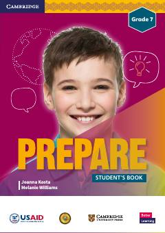

EG7-sinf o'quvchilari uchun mo'ljallangan ingliz tili darsligi.
Ushbu darslik O'zbekiston Respublikasi Xalq ta'limi vazirligi va USAID hamkorligida 7-sinf o'quvchilari uchun maxsus ishlab chiqilgan. Kitob ingliz tilini o'rganishda o'quvchilarning nutq, yozuv va tinglab tushunish ko'nikmalarini rivojlantirishga qaratilgan.